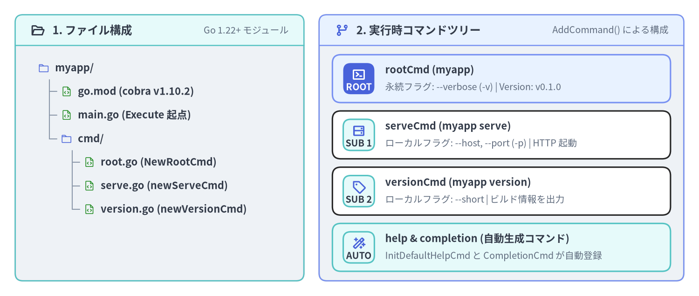
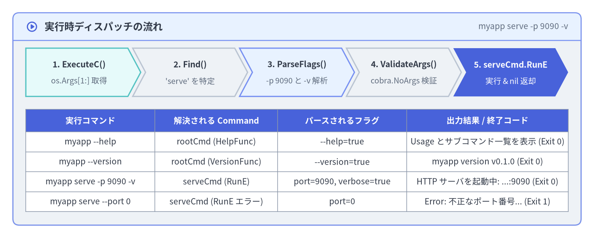

クイックスタートとサブコマンド構築
本ページでは、空のディレクトリから出発して github.com/spf13/cobra v1.10.2 を用いたマルチコマンド CLI（myapp）をゼロから構築します。Go モジュールの初期化、ルートコマンド（rootCmd）の定義、2つのサブコマンド（versionCmd と serveCmd）の AddCommand() による接続、エラーを返す RunE ハンドラの実装、そして組み込みの --help / --version 機構の動作確認までを一通り体験します。

Source Code
from drawlib.canvas import save, setup
from drawlib.icons import phosphor
from drawlib.preset_colors import CssColors
from drawlib.smartarts import CardList, Panel, TreeNode
from drawlib.styles import Colors, Styles
setup(width=184, height=78, dpi=150)
left_panel = Panel(
"1. ファイル構成",
"Go 1.22+ モジュール",
style=Styles.Neutral.patch(shape_r=2.0),
header_style=Styles.SecondaryNeutral.patch(shape_line_width=1.2),
text_style=Styles.DarkBold.patch(text_size=11.5),
description_style=Styles.Muted.patch(text_size=9.5),
icon=phosphor.folder_open,
icon_style=Styles.DarkBold,
header_variant="filled",
header_height=8.0,
)
left_panel.draw((4.0, 4.0), width=76.0, height=70.0)
TreeNode.register_drawing_item(
name="qs_dir",
location="before",
padding_width=4.5,
function=phosphor.folder,
style=Styles.Primary.patch(icon_color=Colors.Primary),
args={"width": 3.0},
)
TreeNode.register_drawing_item(
name="qs_go",
location="before",
padding_width=4.5,
function=phosphor.file_code,
style=Styles.Primary.patch(icon_color=CssColors.ForestGreen),
args={"width": 3.0},
)
tree = TreeNode(
"myapp/",
text_style=Styles.DarkBold.patch(text_size=10.5),
line_style=Styles.Muted.patch(line_width=1.0),
line_horizontal_margin=3.0,
line_horizontal_length=3.0,
line_vertical_margin=6.2,
children=[
TreeNode("go.mod (cobra v1.10.2)").set_drawing_item("qs_go"),
TreeNode("main.go (Execute 起点)").set_drawing_item("qs_go"),
TreeNode(
"cmd/",
children=[
TreeNode("root.go (NewRootCmd)").set_drawing_item("qs_go"),
TreeNode("serve.go (newServeCmd)").set_drawing_item("qs_go"),
TreeNode("version.go (newVersionCmd)").set_drawing_item("qs_go"),
],
).set_drawing_item("qs_dir"),
],
).set_drawing_item("qs_dir")
tree.draw(xy=(10.0, 60.0))
right_panel = Panel(
"2. 実行時コマンドツリー",
"AddCommand() による構成",
style=Styles.Neutral.patch(shape_r=2.0),
header_style=Styles.PrimaryNeutral.patch(shape_line_width=1.2),
text_style=Styles.DarkBold.patch(text_size=11.5),
description_style=Styles.Muted.patch(text_size=9.5),
icon=phosphor.git_branch,
icon_style=Styles.PrimaryBold,
header_variant="filled",
header_height=8.0,
)
right_panel.draw((84.0, 4.0), width=96.0, height=70.0)
r_xy, r_w, r_h = right_panel.get_content_box((84.0, 4.0), width=96.0, height=70.0, padding=(3.5, 2.5))
cmds = CardList(
style=Styles.White,
text_style=Styles.DarkBold.patch(text_size=10.5),
description_style=Styles.Muted.patch(text_size=9.5),
badge_shape="rounded_rect",
badge_style=Styles.SecondaryNeutral,
badge_text_style=Styles.DarkBold.patch(text_size=9.5),
icon_style=Styles.PrimaryBold,
direction="vertical",
spacing=2.2,
)
cmds.add(
"rootCmd (myapp)",
"永続フラグ: --verbose (-v) | Version: v0.1.0",
badge_text="ROOT",
icon=phosphor.terminal_window,
style=Styles.PrimaryNeutral,
badge_style=Styles.PrimaryFlat,
badge_text_style=Styles.WhiteBold.patch(text_size=9.5),
icon_style=Styles.WhiteBold,
)
cmds.add(
"serveCmd (myapp serve)",
"ローカルフラグ: --host, --port (-p) | HTTP 起動",
badge_text="SUB 1",
icon=phosphor.hard_drives,
)
cmds.add(
"versionCmd (myapp version)",
"ローカルフラグ: --short | ビルド情報を出力",
badge_text="SUB 2",
icon=phosphor.tag,
)
cmds.add(
"help & completion (自動生成コマンド)",
"InitDefaultHelpCmd と CompletionCmd が自動登録",
badge_text="AUTO",
icon=phosphor.magic_wand,
style=Styles.SecondaryNeutral,
)
cmds.draw(r_xy, width=r_w, height=r_h)
save()
1. Go モジュールの初期化と Cobra v1.10.2 の導入
作業ディレクトリを作成して go mod init を実行し、github.com/spf13/cobra@v1.10.2 を取得します。
mkdir -p myapp/cmd && cd myapp
go mod init example.com/myapp
go get github.com/spf13/cobra@v1.10.2
これにより github.com/spf13/cobra v1.10.2 と、その直接依存である github.com/spf13/pflag v1.0.9 および github.com/inconshreveable/mousetrap v1.1.0（Windows エクスプローラからの直接起動検知用）が go.mod に追加されます。
補足 — なぜ
cobra-cli initではなくコンストラクタ関数で書くのか？: 旧来のcobra-cliジェネレータは、パッケージグローバル変数（var rootCmd = &cobra.Command{...}）とfunc init()を生成します。第2章: ファクトリ関数・Options・DI パターン で詳しく解説するとおり、最初からコンストラクタ関数（NewRootCmd()）で記述しておけば、コード量は変わらずに並行テスト（t.Parallel()）での状態汚染を完全に防ぐことができます。
2. ルートコマンドの実装（cmd/root.go）
cmd/root.go を作成し、ルートコマンドの生成・Version の設定・全サブコマンド共通の永続フラグ --verbose の登録・子コマンドの接続を行う NewRootCmd() を実装します。
package cmd
import (
"github.com/spf13/cobra"
)
// RootOptions はルートおよび全サブコマンドで共有するフラグ値を保持します。
type RootOptions struct {
Verbose bool
}
// NewRootCmd はルート Command を生成し、サブコマンドツリーを組み立てます。
func NewRootCmd() *cobra.Command {
opts := &RootOptions{}
rootCmd := &cobra.Command{
Use: "myapp",
Short: "クラウドワークロード管理 CLI ツール",
Long: "myapp は Cobra v1.10.2 で構築されたマイクロサービス管理 CLI です。",
Version: "v0.1.0",
SilenceUsage: true, // RunE が実行時エラーを返した際に Usage 全文を再表示しない
SilenceErrors: true, // エラー出力を main.go 側の1箇所に集約する
}
// PersistentFlags（永続フラグ）は serve や version など全子孫コマンドに継承される
rootCmd.PersistentFlags().BoolVarP(
&opts.Verbose,
"verbose",
"v",
false,
"詳細なデバッグログ出力を有効化",
)
// 子サブコマンドをルートコマンドに登録
rootCmd.AddCommand(
newVersionCmd(),
newServeCmd(opts),
)
return rootCmd
}
Version フィールドと -v 短縮フラグの衝突回避メカニズム
rootCmd.Version に空でない文字列（"v0.1.0"）を設定すると、Execute() 実行時に InitDefaultVersionFlag() が自動的に --version フラグを追加します。
- もしルートコマンドで
-v短縮フラグが未使用であれば、Cobra は自動的に-vを--versionの短縮形として割り当てます。 - 上記のコードでは
--verboseに-vを割り当てているため、Cobra はc.Flags().ShorthandLookup("v") != nilを検知し、パニックを起こすことなく--version（短縮形なし）のみを安全に登録します。 - バージョン出力のフォーマットは
rootCmd.SetVersionTemplate("{{.Name}} release {{.Version}}\n")でカスタマイズ可能です。
3. サブコマンドの実装（cmd/version.go と cmd/serve.go）
3.1 cmd/version.go — ローカルフラグ --short を持つサブコマンド
package cmd
import (
"runtime"
"github.com/spf13/cobra"
)
func newVersionCmd() *cobra.Command {
var short bool
cmd := &cobra.Command{
Use: "version",
Short: "バージョン番号と Go ランタイム情報を表示",
Args: cobra.NoArgs, // 余分な位置引数が渡された場合はエラーにする
RunE: func(cmd *cobra.Command, args []string) error {
if short {
cmd.Println("v0.1.0")
return nil
}
cmd.Printf("myapp version v0.1.0 (%s/%s, %s)\n",
runtime.GOOS, runtime.GOARCH, runtime.Version())
return nil
},
}
cmd.Flags().BoolVar(&short, "short", false, "バージョン番号のみを簡潔に出力")
return cmd
}
3.2 cmd/serve.go — RunE によるエラー返却と親オプションの参照
アクションの実装には、Run ではなく常に RunE func(cmd *cobra.Command, args []string) error を使用してください。コマンド内部で os.Exit(1) を直接呼ばずに error を返すことで、Execute() の呼び出し元や単体テストでエラーを確実に捕捉できます。
package cmd
import (
"fmt"
"github.com/spf13/cobra"
)
func newServeCmd(rootOpts *RootOptions) *cobra.Command {
var (
host string
port int
)
cmd := &cobra.Command{
Use: "serve",
Aliases: []string{"server", "start"},
Short: "HTTP コントロールプレーンサーバを起動",
Example: " myapp serve --port 9090 --verbose",
Args: cobra.NoArgs,
RunE: func(cmd *cobra.Command, args []string) error {
if port < 1 || port > 65535 {
return fmt.Errorf("不正なポート番号 --port %d: 1〜65535 の範囲で指定してください", port)
}
if rootOpts.Verbose {
cmd.Printf("[DEBUG] 詳細ログモードが有効です\n")
}
cmd.Printf("HTTP サーバを起動中: http://%s:%d\n", host, port)
return nil
},
}
// Flags() は "myapp serve" 専用のローカルフラグを登録する
cmd.Flags().StringVar(&host, "host", "127.0.0.1", "バインドするホストアドレス")
cmd.Flags().IntVarP(&port, "port", "p", 8080, "待ち受け TCP ポート番号")
return cmd
}
4. エントリポイント（main.go）の作成と動作確認
main.go は極力シンプルに保ち、ルートコマンドの構築・Execute() の呼び出し・エラー時の終了コード制御のみを担当させます。
package main
import (
"fmt"
"os"
"example.com/myapp/cmd"
)
func main() {
rootCmd := cmd.NewRootCmd()
if err := rootCmd.Execute(); err != nil {
fmt.Fprintf(os.Stderr, "Error: %v\n", err)
os.Exit(1)
}
}

Source Code
from drawlib.canvas import save, setup
from drawlib.icons import phosphor
from drawlib.smartarts import ChevronProcess, Panel, Table
from drawlib.styles import Colors, Styles
setup(width=184, height=74, dpi=150)
outer = Panel(
"実行時ディスパッチの流れ",
"myapp serve -p 9090 -v",
style=Styles.Neutral.patch(shape_r=2.0),
header_style=Styles.PrimaryNeutral.patch(shape_line_width=1.2),
text_style=Styles.DarkBold.patch(text_size=12.0),
description_style=Styles.Muted.patch(text_size=10.0),
icon=phosphor.play_circle,
icon_style=Styles.PrimaryBold,
header_variant="filled",
header_height=8.5,
)
outer.draw((4.0, 4.0), width=176.0, height=66.0)
proc = ChevronProcess(
style=Styles.White,
text_style=Styles.DarkBold.patch(text_size=10.0),
description_style=Styles.Muted.patch(text_size=9.5),
corner_angle=62.0,
spacing=1.5,
flat_left_end=True,
)
proc.add("1. ExecuteC()", description="os.Args[1:] 取得", style=Styles.SecondaryNeutral)
proc.add("2. Find()", description="'serve' を特定", style=Styles.Neutral)
proc.add("3. ParseFlags()", description="-p 9090 と -v 解析", style=Styles.PrimaryNeutral)
proc.add("4. ValidateArgs()", description="cobra.NoArgs 検証", style=Styles.Neutral)
proc.add(
"5. serveCmd.RunE",
description="実行 & nil 返却",
style=Styles.PrimaryFlat,
text_style=Styles.WhiteBold.patch(text_size=10.0),
description_style=Styles.White.patch(text_size=9.5),
)
proc.draw(xy=(8.0, 44.0), width=168.0, height=15.0)
tbl = Table(
cell_style=Styles.White,
text_style=Styles.Dark.patch(text_size=10.0),
header_cell_style=Styles.PrimaryFlat,
header_text_style=Styles.WhiteBold.patch(text_size=10.0),
border_style=Styles.MutedThin,
)
tbl.set_style_cell_evenodd(
even_color=Colors.Light,
even_text_style=Styles.Dark.patch(text_size=10.0),
odd_color=Colors.White,
odd_text_style=Styles.Dark.patch(text_size=10.0),
)
tbl.set_style_cell_header(
background_color=Styles.PrimaryFlat.shape_fill_color,
text_style=Styles.WhiteBold.patch(text_size=10.0),
)
rows = [
["実行コマンド", "解決される Command", "パースされるフラグ", "出力結果 / 終了コード"],
["myapp --help", "rootCmd (HelpFunc)", "--help=true", "Usage とサブコマンド一覧を表示 (Exit 0)"],
["myapp --version", "rootCmd (VersionFunc)", "--version=true", "myapp version v0.1.0 (Exit 0)"],
["myapp serve -p 9090 -v", "serveCmd (RunE)", "port=9090, verbose=true", "HTTP サーバを起動中: ...:9090 (Exit 0)"],
["myapp serve --port 0", "serveCmd (RunE エラー)", "port=0", "Error: 不正なポート番号... (Exit 1)"],
]
tbl.draw_flexible(
xy=(8.0, 40.0),
column_widths=[40.0, 38.0, 40.0, 50.0],
row_heights=[7.0, 6.2, 6.2, 6.2, 6.2],
data=rows,
align="top_left",
)
save()
ターミナルでの実行確認
実際に go run . で各サブコマンドとフラグを実行し、自動生成されたヘルプやエラー出力を確認してみましょう。
# 1. 自動生成されたルートヘルプの確認（completion と help も自動追加される）
$ go run . --help
myapp は Cobra v1.10.2 で構築されたマイクロサービス管理 CLI です。
Usage:
myapp [command]
Available Commands:
completion Generate the autocompletion script for the specified shell
help Help about any command
serve HTTP コントロールプレーンサーバを起動
version バージョン番号と Go ランタイム情報を表示
Flags:
-h, --help help for myapp
-v, --verbose 詳細なデバッグログ出力を有効化
--version version for myapp
Use "myapp [command] --help" for more information about a command.
# 2. ローカルフラグ (-p) と親から継承した永続フラグ (-v) を組み合わせて serve を実行
$ go run . serve -p 9090 -v
[DEBUG] 詳細ログモードが有効です
HTTP サーバを起動中: http://127.0.0.1:9090
# 3. バリデーションエラー時の出力確認（SilenceUsage: true によりエラーメッセージのみが簡潔に出る）
$ go run . serve --port 70000
Error: 不正なポート番号 --port 70000: 1〜65535 の範囲で指定してください
重要 —
fmt.Print*ではなくcmd.Print*を使う習慣をつけよう:RunEの中でfmt.Printfではなくcmd.Printf/cmd.Printlnを呼んでいる点に注目してください。cmd.Print*はcmd.OutOrStdout()を経由して出力されるため、単体テスト時にcmd.SetOut(buf)で標準出力をメモリ上のバッファへ簡単にリダイレクトできます。
次のステップ
最初のサブコマンドツリーが動いたら、第2章: ファクトリ関数・Options・DI パターン へ進み、コマンド単位の *Options 構造体設計（Complete() -> Validate() -> Run()）と依存性注入（DI）のベストプラクティスを学びましょう。